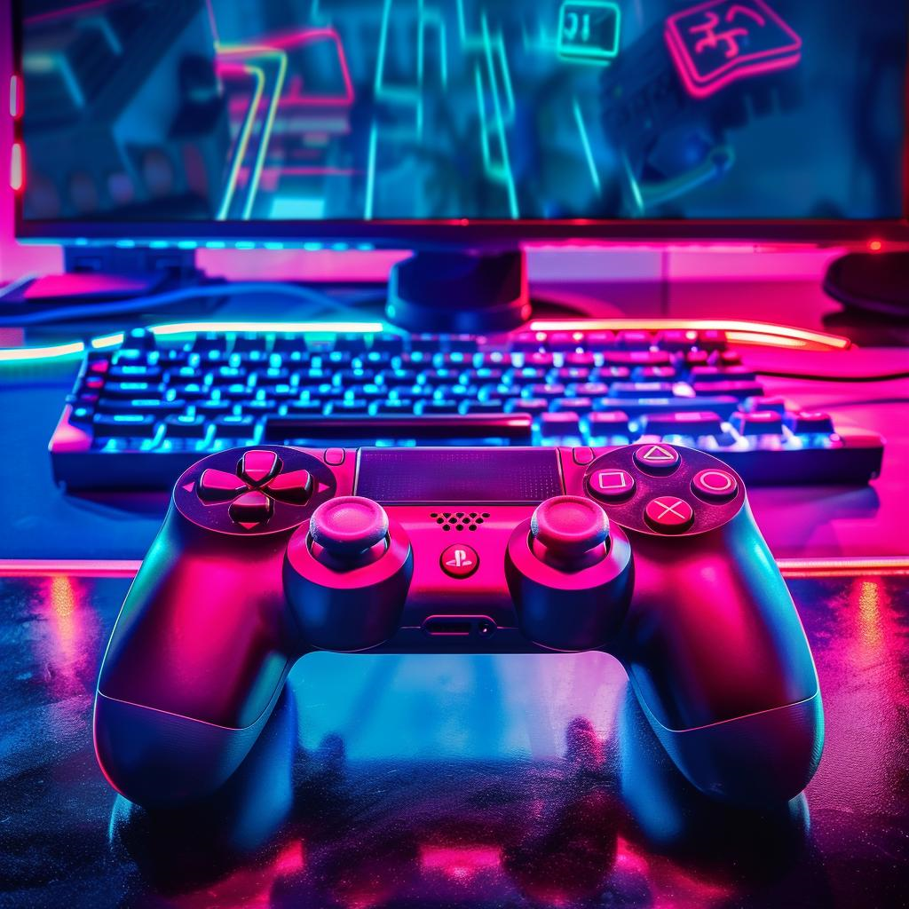

Filmes e Séries
O cinema e as séries proporcionam entretenimento, cultura e conhecimento. Nesta seção, apresento meu interesse por produções cinematográficas, histórias envolventes e diferentes gêneros audiovisuais.
Fonte da imagem: Imagem gerada pela IA - ChatGPT .
Músicas e Podcasts
A música está presente em diferentes momentos da vida, proporcionando inspiração e bem-estar. Os podcasts também representam uma excelente oportunidade de aprendizado, informação e entretenimento.
Fonte da imagem: Imagem gerada pela IA - ChatGPT .
Games e Tecnologias

Os jogos eletrônicos combinam criatividade, estratégia e inovação. Nesta seção, destaco meu interesse pelo universo dos games, pelas novas tecnologias e pelas transformações digitais.
Fonte da imagem: Imagem gerada pela IA - ChatGPT.